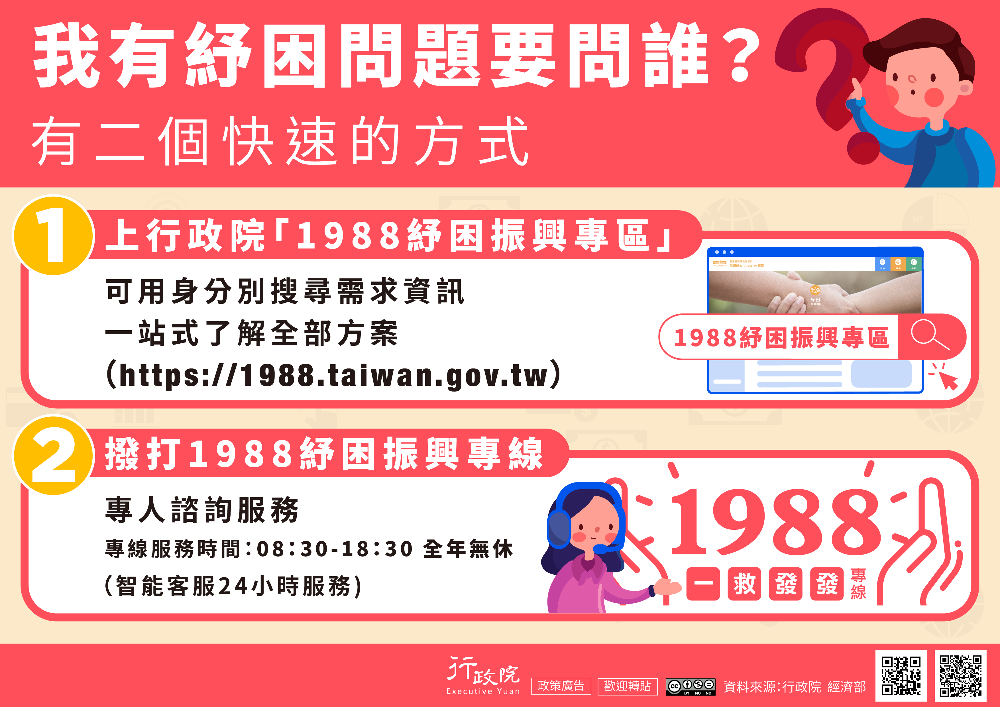
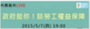

按 Enter 到主內容區
:::
回首頁
網站導覽
RSS
民意信箱
English
勞動法令
常見問答
字級：
小
中
大
您的瀏覽器不支援JavaScript語法，JavaScript語法並不影響內容的陳述。您可使用按鍵盤上的Ctrl鍵+ (+)鍵放大/(-)鍵縮小來改變字型大小；回到上一頁可使用瀏覽器提供的 Alt+左方向鍵(←) 快速鍵功能；列印可使用瀏覽器提供的(Ctrl+P)功能。您的瀏覽器，不支援script語法，若您的瀏覽器無法支援請點選此超連結
網站導覽
您的瀏覽器不支援 JavaScript 或 JavaScript已停用
帳號:
職業災害預防
勞工健康
勞工健康
過勞認定
本部簡介
正副首長介紹
職掌及組織
勞動大事記
勞動部辦公位置地圖點位
聯絡資訊
新聞與公告
新聞稿
澄清專區
公布欄
活動訊息
職災訊息
勞動基準法修法專區
105年12月21日週休二日修法
勞動基準法適用
工資、工時
工作規則
部分時間工作勞工權益
違反勞動法令公布專區
就業資訊
新聞稿
澄清專區
公布欄
就業資訊
歷史新聞
招標資訊
安全衛生
職業安全衛生管理
業務介紹
職業安全衛生管理系統
職業安全衛生管理系統
職場安全健康週
職業安全衛生管理績效認可
職業安全衛生教育訓練
作業環境監測
業務介紹
公告分析方法
監測機構名單
勞動部認可之辦理勞工作業環境監測及暴露評估訓練機構
勞工作業環境監測及暴露危害管理網路登錄系統
化學品管理
業務介紹
優先管理化學品備查及管制性化學品許可
CCB 化學品分級管理
GHS 化學品全球調和制度
CSNN化學物質登記管理
勞工健康服務
業務介紹
參考工具或指引
從事勞工健康服務醫師及護理人員訓練
勞工健康照護資訊平台
勞工健康服務醫護專區
勞工體格及健康檢查
業務介紹
辦理勞工體格及健康檢查醫護人員訓練
勞工體格及健康檢查認可醫療機構查詢系統
特定檢查項目(血(尿)中鉛、尿中鎳、尿中無機砷、尿中鎘、血(尿)中汞等)檢驗之機構名單查詢
一般及特殊體格(健康)檢查記錄格式
勞工體格與健康檢查認可醫療機構檢查品質訪查結果
綜合安全
勞工安全衛生促進會
中小企業工作環境輔導改善
高風險事業單位製程安全管理輔導計畫
勞動部補助高風險製造業事業單位建置自動化安全產線作業要點
防災宣導
營造安全
安全衛生圖說、指引
營造業職災案例分析及防災對策
訓練教材及講義
施工架作業安全
宣導資料
危險性機械設備安全
代檢機構責任轄區表
防災宣導
危險性機械及設備指定適用國外檢查標準
機械設備器具安全資訊網
機械設備器具安全資訊網
職業安全衛生獎項
國家職業安全衛生獎
推行職業安全衛生優良單位及人員
推動職業安全衛生優良公共工程及人員選拔
政府機關職業安全衛生績效評核
評核規範
問答集
績效書面報告格式
業務專區
勞動基準法修法專區
105年12月21日週休二日修法
勞動基準法適用
工資、工時
工作規則
部分時間工作勞工權益
違反勞動法令公布專區
童工、母性保護、技術生
工讀生權益
職業災害與補償（助）
勞動派遣
勞資會議
勞資關係
失業協助
退休、福祉
國際勞動事務
勞動基金運用
兼任助理勞動權益
職場平權
便民服務
線上申辦及規定
政府資訊公開
勞工申訴專區
施政計畫
特別休假日數試算
加班費試算系統
開放資料
捐補助專區
遊說法專區
廉政專區
性別平等專區
因應貿易自由化專區
勞保(就保)爭議審議專區
八仙樂園粉塵暴燃專區
服務資源地圖(整合)
石綿專區
職場高手秘笈
雙語詞彙
電子報訂閱
常見問答
表單下載
勞動統計專網
勞動統計業務簡介
勞動統計查詢網
統計報告
勞動統計通報
勞動統計調查
性別統計專區
族群勞動統計
行業職業就業指南
預告統計資料發布
重要統計事項變更
勞動統計名詞
網路填報系統
薪資行情及大專生就業導航
相關連結
國外勞工業務網站
消費者保護
勞工健檢認可醫療機構名單
勞動部公文附件下載區
宣導資訊
:::
重要公告
1.勞動部官網將於4月23日下午2點至下午6點進行維護作業，屆時網站將暫時停止服務，造成不便敬請見諒。
2.勞動部官網將於4月23日下午2點至下午6點進行維護作業，屆時網站將暫時停止服務，造成不便敬請見諒。
更多宣導大圖
勞動部社群平台
新聞稿
107-08-10
勞動部職安署與精密機械製造業簽署健康伙伴 共同打造安全健康工作環境勞動部職安署與精密機械製造業簽署健康伙伴 共同打造安全健康工作環境勞動部職安署與精密機械製造業簽署健康伙伴 共同打造安全健康工作環境
107-08-08
提升石化產業製程安全管理 「2018國際製程安全論壇」在麥寮六輕園區登場
107-08-07
勞動部已將「高違規」及「違反情節嚴重」企業列為專案勞檢對象勞動部已將「高違規」及「違反情節嚴重」企業列為專案勞檢對象勞動部已將「高違規」及「違反情節嚴重」企業列為專案勞檢對象
更多新聞稿
澄清專區
107-08-10
勞動檢查是落實勞動法令、保障勞工權益的重要作為，事業單位遵守勞動勞動檢查是落實勞動法令、保障勞工權益的重要作為，事業單位遵守勞動
107-08-08
勞動檢查不會事先通知資方
107-08-07
【澄清稿】勞動檢查乃政府公權力之行使，所有執法之勞動檢查員
更多澄清專區
活動訊息
107-08-10
職安署規劃於107年9月中旬分區辦理3場次職業安全衛生管理系統績效認
107-08-08
職業安全衛生署於107年8月10日假花蓮勞工育樂中心辦理農、林、漁
107-08-07
職業安全衛生署於107年9月18日(星期二)假臺北榮民總醫院辦理
更多活動訊息
公布欄
107-08-10
從事稻穀乾燥機輸送設備安裝工程發生墜落致死災害
107-08-08
交通部公路總局各區監理所(站)提供臨櫃行動支付與信用卡繳費服務
107-08-07
【勞工健康服務計畫試行指引
更多公布欄
熱門服務
過勞專區
勞動基準法專區
勞工體格及健檢認可醫療機構查詢系統
職災勞工津貼補助
意見信箱(勞檢申訴)
勞動法令查詢系統
職業傷病管理服務中心
線上報名
更多熱門服務
主題網站

更多主題網站
Youtube影音專區
更多影音
相關連結
勞動部
相關檢查機構
勞工行政主管機關
更多相關連結
外部連結
更多外部連結
機關宣導圖像化資訊
GHS標示及危害通識
提供危害性化學品
GHS標示及安全資料表
之參考例
化學品評估及分級管理
提供化學品分級管理
工具(CCB)及相關教材
優先管理化學品備查/管制性化學品許可申請
提供優先管理化學品備查
及管制性化學品許可
之申請
作業環境監測
提供作業環境監測計畫
及結果之通報
新化學物質登記
提供勞動部公告
之化學物質清單查詢，
以判斷是否應辦理
新化學物質登記
< 快捷列
> 快捷列
新聞稿
熱門服務
超連結
機關宣導
收合
本部簡介
正副首長介紹
部長介紹
政務次長 蘇麗瓊
政務次長 施克和
常務次長 林三貴
職掌及組織
本部各司處及所屬機關職掌介紹
組織圖
勞動大事記
勞動部辦公位置地圖點位
聯絡資訊
重大政策
施政績效
施政績效評估
新聞公告
新聞稿
勞動條件
勞資關係
福祉退休
勞動保險
勞動力運用與發展
勞動檢查與安全衛生
勞動基金
勞動統計
澄清專區
公布欄
勞保
就保
勞工退休
工資墊償
工會
統計
就業服務訓練
外勞
安全衛生
勞動檢查
職災保護
勞動基金
勞動條件
勞資關係
勞動福祉
活動訊息
其他
就業資訊
台灣就業通
行政院人事行政總處事求人機關徵才系統就業資訊
歷史新聞
業務專區
勞動基準法修法專區
107年勞動基準法修法條文
修正勞動基準法施行細則部分條文
勞動基準法第34條及第36條例外情形
勞動基準法修法宣導資料
疑義說明
105年12月21日週休二日修法
105年12月21日週休二日修法
勞動基準法及施行細則修正條文
週休二日相關函釋、法規命令及行政規範
檢舉/輔導/檢查
各行業調適參考指引
週休二日參考格式範例
週休二日相關試算系統
勞動基準法適用
勞動基準法簡介
勞動基準法適用原則
各行業適用勞動基準法時間
勞工之身分認定
工作年資相關疑義
工資、工時
基本工資
工資
工時(休息、休假、請假)
勞雇協商減少工時專區
天然災害勞工出勤權益
工作規則
工作規則參考手冊
部分時間工作勞工權益
僱用部分時間工作勞工應行注意事項
部分時間工作勞工勞動契約參考範本
違反勞動法令公布專區
違反勞動法令事業單位（雇主）查詢系統
各縣市違反勞動法令事業單位一覽表
違反勞動基準法罰鍰案件處理要點
童工、母性保護、技術生
童工
技術生
母性保護
工讀生權益
勞動條件方面的權利
職工福利方面的權利
勞工保險方面的權利
安全衛生方面的權利
工讀生的義務
工讀生服務應注意事項
「工作不被坑的10個知識」懶人包
台灣就業通-青少年打工專區
職業災害與補償（助）
職業災害勞工保護權益
職業災害保險
勞動基準法雇主補償責任
職業災害
通勤災害
勞動派遣
勞動派遣權益指導原則
派遣勞動上限規範
派遣懶人包
要派單位與派遣事業單位
要派契約書參考範本
派遣勞動契約應約定及不得約定事項
政府機關(構)勞動派遣期間勞動契約書範本
勞資會議
勞資會議流程圖
勞資會議說明手冊
勞資會議相關知識
勞資會議參考格式
勞資關係
競業禁止條款專區
勞動三權知識服務專區
國道收費員就業安定補貼專案
社會對話
如何申請簽訂團體協約獎勵金
裁決案件統計表
相關委員名單
如何申請裁決及相關書表
如何申請仲裁及相關書表
如何申請調解及相關書表
勞資爭議處理程序
如何簽定團體協約
如何籌組工會
失業協助
就業保險給付及申請
職業訓練
失業勞工子女就學補助
失業勞工保障權益手冊電子檔
退休、福祉
勞工保險老年給付
勞退舊制
勞退新制
資遣費
職工福利
工作與生活平衡及員工協助方案
企業設置哺(集)乳室與托兒設施措施
勞保年金改革相關說明
國際勞動事務
國際組織及國外勞工行政機構連結
國際勞動法令資訊
國際重要勞動情勢發展
勞動基金運用
歷年經營概況
投資運用配置
運用範圍
勞動基金規模
投資運用說明
兼任助理勞動權益
兼任助理指導原則
問答集
兼任助理懶人包
職場平權
防制就業歧視
便民服務
線上申辦及規定
政府資訊公開
勞工申訴專區
施政計畫
中程施政計畫
年度施政計畫
特別休假日數試算
加班費試算系統
開放資料
捐補助專區
遊說法專區
廉政專區
性別平等專區
因應貿易自由化專區
勞保(就保)爭議審議專區
八仙樂園粉塵暴燃專區
服務資源地圖(整合)
石綿專區
職場高手秘笈
雙語詞彙
電子報訂閱
常見問答
表單下載
勞動統計專網
勞動統計業務簡介
勞動統計查詢網
統計報告
勞動統計通報
勞動統計調查
性別統計專區
族群勞動統計
行業職業就業指南
預告統計資料發布
重要統計事項變更
勞動統計名詞
網路填報系統
薪資行情及大專生就業導航
相關連結
國外勞工業務網站
消費者保護
勞工健檢認可醫療機構名單
勞動部公文附件下載區
宣導資訊
回頁首